Multi-Agent AI Framework
Collaborative Large Language Model agents for intelligent analysis of fermentation experiments.
Overview
The Multi-Agent AI Framework is the central intelligence layer of Raw2Ready.
Instead of relying on a single Large Language Model, Raw2Ready distributes reasoning across multiple specialized agents, each responsible for a different knowledge domain.
This collaborative architecture improves reasoning quality, reduces hallucinations, increases explainability and enables evidence-based responses supported by structured experimental data, metadata and external biological knowledge.
Objectives
- Support evidence-based reasoning.
- Reduce hallucinations.
- Combine multiple knowledge sources.
- Improve biological interpretation.
- Provide transparent reasoning.
- Maintain execution traceability.
- Support modular AI extensions.
Why Multi-Agent AI?
A single Large Language Model cannot reliably perform every task required during fermentation analysis.
Different reasoning problems require different expertise, including statistical interpretation, microorganism knowledge, literature retrieval and protocol analysis.
Raw2Ready therefore decomposes complex reasoning into multiple specialized agents coordinated by a central Agent Orchestrator.
Specialization improves accuracy, transparency and maintainability.
High-Level Architecture
User Question
│
▼
Agent Orchestrator
│
┌─────────────────┼─────────────────┐
│ │ │
▼ ▼ ▼
Dataset Metadata Analyst BacDive Agent
│ │ │
▼ ▼ ▼
Statistics Literature Agent Internet Agent
│ │ │
└─────────────────┼─────────────────┘
▼
Master Summarizer
│
▼
Final AI Response
The Agent Orchestrator coordinates every reasoning step, ensuring that only the necessary agents participate in the analysis.
Agent Orchestrator
The Agent Orchestrator serves as the decision-making component of the Multi-Agent framework.
It analyses each user request, determines which agents are required and coordinates the complete execution workflow.
- Receives user requests.
- Determines required agents.
- Schedules execution.
- Collects intermediate results.
- Coordinates evidence fusion.
- Invokes the Master Summarizer.
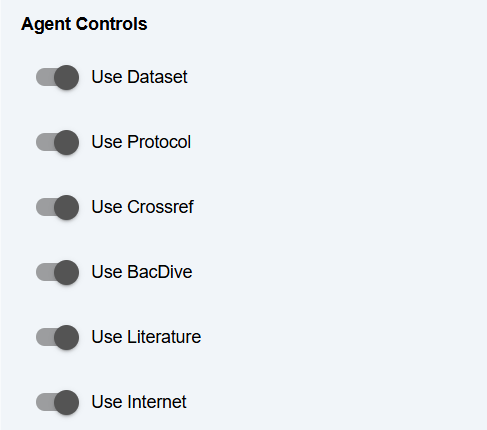
Runtime Memory
Every AI agent accesses a shared Runtime Memory that stores the current state of the experiment.
Rather than exchanging information directly, agents read from and write to Runtime Memory, simplifying communication and improving consistency.
Runtime Memory
├── Active Dataset
├── Metadata
├── Calculated Variables
├── Statistical Results
├── BacDive Knowledge
├── Literature Evidence
├── Internet Evidence
└── Agent Outputs
Runtime Memory ensures that every agent operates using the same experimental context.
Agent Communication Model
Agents communicate indirectly through the Agent Orchestrator and Runtime Memory.
User
│
▼
Orchestrator
│
├──────────────► Data Analyst
│
├──────────────► Metadata Analyst
│
├──────────────► BacDive Explorer
│
├──────────────► Literature Reviewer
│
├──────────────► Internet Explorer
│
▼
Master Summarizer
│
▼
User Response
This communication model minimizes dependencies between agents while maintaining complete execution traceability.
Execution Workflow
User Query
│
▼
Intent Analysis
│
▼
Agent Selection
│
▼
Parallel Execution
│
▼
Evidence Collection
│
▼
Evidence Fusion
│
▼
Master Summarization
│
▼
Final Response
Only the agents relevant to the current query are executed, making the reasoning process efficient and scalable.
Data Analyst Agent
The Data Analyst Agent is responsible for interpreting numerical fermentation datasets.
It combines descriptive statistics, distribution analysis, correlations, missing-value analysis and calculated variables to produce human-readable explanations.
- Descriptive statistics
- Distribution analysis
- Correlation interpretation
- Outlier detection
- Trend analysis
- Automatic biological interpretation
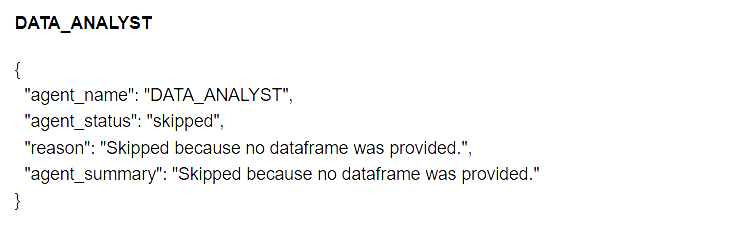
Internet Explorer Agent
The Internet Explorer Agent retrieves up-to-date scientific information from external online resources whenever additional evidence is required.
Instead of relying only on the local dataset, the agent expands the available knowledge using trusted web sources.
User Question
│
▼
Internet Search
│
▼
Document Retrieval
│
▼
Evidence Extraction
│
▼
Runtime Memory
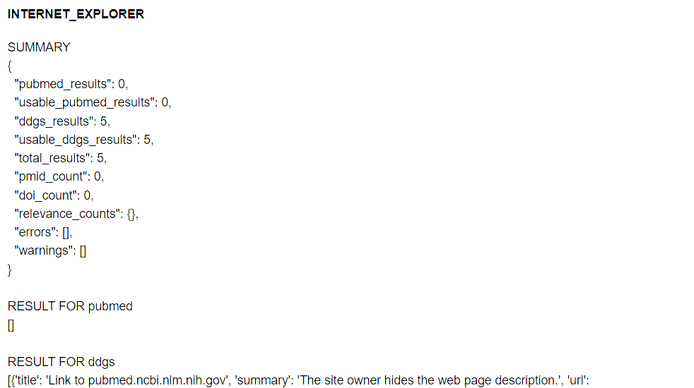
Literature Reviewer Agent
The Literature Reviewer Agent searches and analyzes scientific publications relevant to the user's question.
Instead of returning individual papers, the agent summarizes scientific consensus across multiple publications.
- Scientific literature retrieval
- Claim extraction
- Consensus detection
- Evidence summarization
- Citation generation
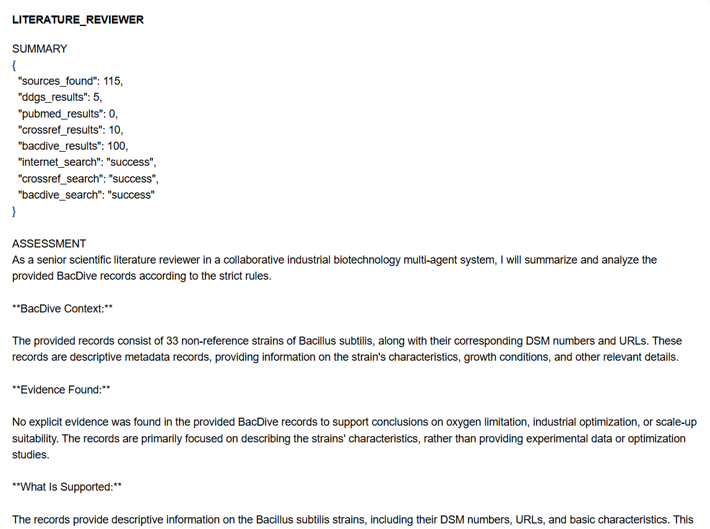
BacDive Explorer Agent
The BacDive Explorer Agent provides detailed microorganism knowledge using the BacDive microbial database.
It automatically resolves organism names, retrieves strain information and provides biologically relevant growth conditions.
Microorganism
│
▼
Name Resolution
│
▼
BacDive Query
│
▼
Growth Conditions
│
▼
Runtime Memory
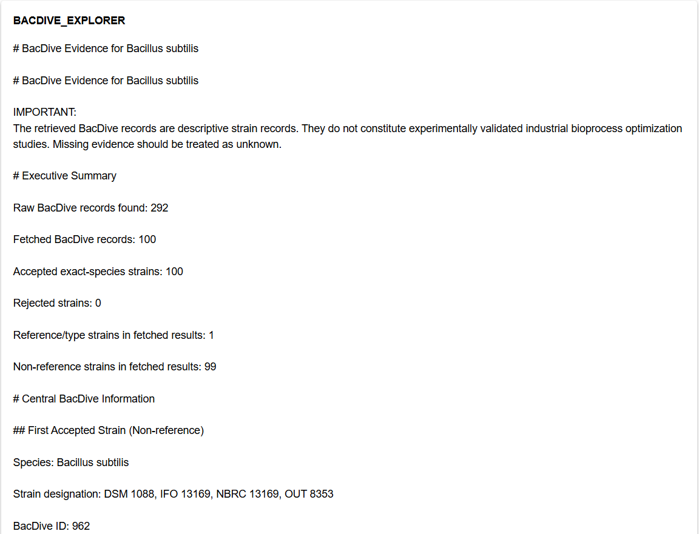
Metadata Analyst Agent
The Metadata Analyst Agent interprets experimental protocols and structured metadata stored using the MIFE schema.
It transforms protocol descriptions into structured contextual knowledge that can be combined with experimental observations.
- Protocol interpretation
- Experimental conditions
- Time-dependent events
- Process variable extraction
- Metadata summarization
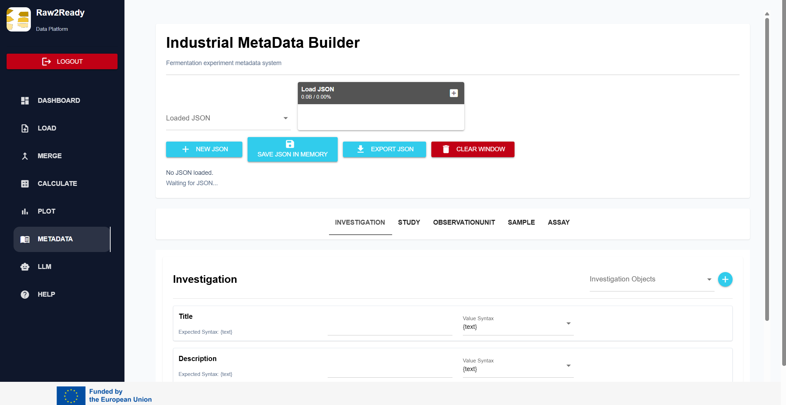
Agent Cooperation
Individual agents do not work in isolation. Instead, they collaborate by contributing complementary evidence to solve complex biological questions.
Dataset
│
▼
Data Analyst
│
├──────────┐
│ │
Metadata BacDive
│ │
├──────────┤
│ │
Literature Internet
│ │
└──────────┘
│
▼
Master Summarizer
Each agent contributes a specialized view of the problem, enabling richer and more reliable responses than a single general-purpose model.
Agent Activation Logic
Agents are activated dynamically according to the content of the user's request.
| User Request | Activated Agent(s) |
|---|---|
| Analyze fermentation data | Data Analyst |
| Explain protocol | Metadata Analyst |
| Growth conditions | BacDive Explorer |
| Scientific evidence | Literature Reviewer |
| Latest information | Internet Explorer |
| Complex biological question | Multiple agents |
Parallel Execution
Whenever multiple agents are required, Raw2Ready executes them independently before combining their outputs.
User Query
│
▼
Agent Selection
│
├──────────────► Data Analyst
├──────────────► Metadata Analyst
├──────────────► BacDive Explorer
├──────────────► Literature Reviewer
└──────────────► Internet Explorer
│
▼
Parallel Execution
│
▼
Evidence Collection
Master Summarizer Agent
The Master Summarizer Agent is the final component of the Multi-Agent framework.
Instead of generating knowledge itself, it combines the outputs produced by all specialized agents into a single coherent response.
- Collects agent outputs
- Removes duplicated information
- Resolves conflicting evidence
- Produces a unified explanation
- Maintains scientific consistency
- Generates the final answer
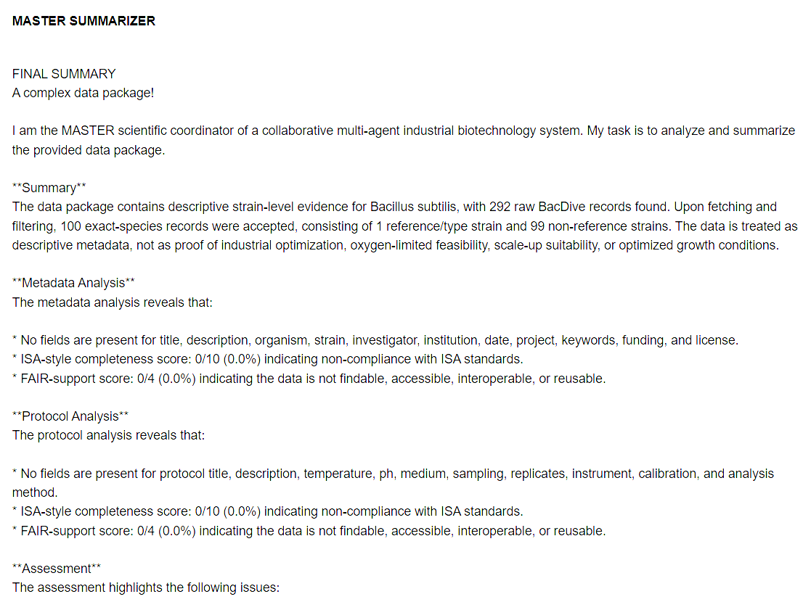
Evidence Fusion
Evidence generated by specialized agents is merged before the final response is produced.
Data Analyst
│
Metadata Analyst
│
BacDive Explorer
│
Literature Reviewer
│
Internet Explorer
│
▼
Evidence Fusion
│
▼
Master Summarizer
│
▼
Final Response
Final responses combine numerical evidence, metadata, microbial knowledge and scientific literature into a single explanation.
Agent Routing Logic
Before execution begins, the Agent Orchestrator determines which agents are required.
Only relevant agents are activated, reducing execution time while maintaining response quality.
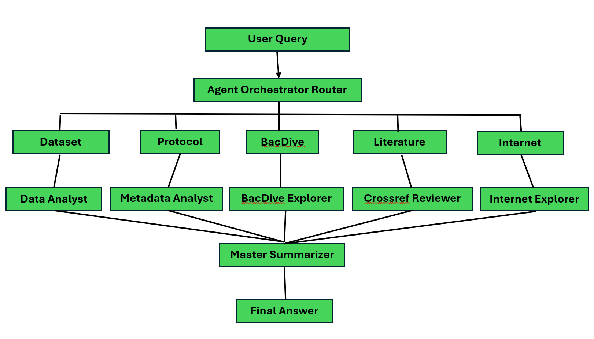
Safe Execution Framework
Every agent operates independently inside a controlled execution environment.
- Independent execution
- Error isolation
- Controlled communication
- Execution monitoring
- Result validation
Agent
│
Execute
│
Validate
│
Store Result
│
Continue
Runtime Memory Lifecycle
Runtime Memory evolves continuously throughout the execution of the AI workflow.
Load Dataset
│
▼
Store Dataset
│
▼
Metadata Added
│
▼
Statistics Generated
│
▼
External Knowledge
│
▼
Agent Outputs
│
▼
Master Summary
Every reasoning step enriches Runtime Memory with additional information.
Execution Monitoring
Raw2Ready records every AI operation during agent execution.
- Agent start time
- Execution duration
- Retrieved evidence
- Generated summaries
- Errors
- Completion status
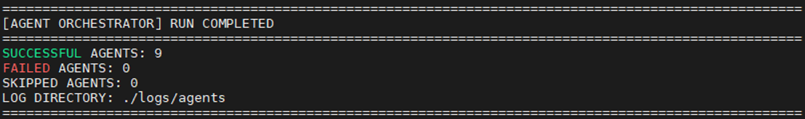
Agent Traceability
Every statement generated by Raw2Ready can be traced back to its originating agent.
| Information | Originating Agent |
|---|---|
| Dataset interpretation | Data Analyst |
| Protocol information | Metadata Analyst |
| Microbial properties | BacDive Explorer |
| Scientific evidence | Literature Reviewer |
| Latest web information | Internet Explorer |
Logging Architecture
Raw2Ready maintains detailed execution logs for debugging, reproducibility and auditing.
User Request
│
▼
Execution Log
│
├── Agent Selection
├── Runtime Memory
├── API Calls
├── Execution Time
├── Errors
└── Final Response
Scalability
The modular architecture allows new agents to be integrated without modifying existing components.
- Independent agents
- Plugin architecture
- Reusable interfaces
- Shared Runtime Memory
- Future knowledge sources
The Multi-Agent framework is designed for continuous expansion as new biological knowledge sources and AI capabilities become available.
End-to-End AI Pipeline
Every user request follows a structured execution pipeline coordinated by the Agent Orchestrator.
User Question
│
▼
Intent Recognition
│
▼
Agent Selection
│
▼
Runtime Memory Access
│
▼
Parallel Agent Execution
│
▼
Evidence Collection
│
▼
Evidence Fusion
│
▼
Master Summarizer
│
▼
Final AI Response
This pipeline ensures that responses are generated from multiple complementary knowledge sources rather than from a single reasoning process.
Example User Questions
The Multi-Agent AI framework supports a wide variety of biological and fermentation-related questions.
| User Question | Activated Agents |
|---|---|
| Explain the fermentation profile. | Data Analyst |
| Why did dissolved oxygen decrease? | Data Analyst + Metadata Analyst |
| What are the optimal growth conditions? | BacDive Explorer |
| What does the literature report? | Literature Reviewer |
| Is there recent information about this microorganism? | Internet Explorer |
| Summarize the entire experiment. | All Agents |
AI-Assisted Reasoning
The Multi-Agent framework combines structured numerical analysis with biological knowledge, metadata and scientific evidence to provide comprehensive explanations.
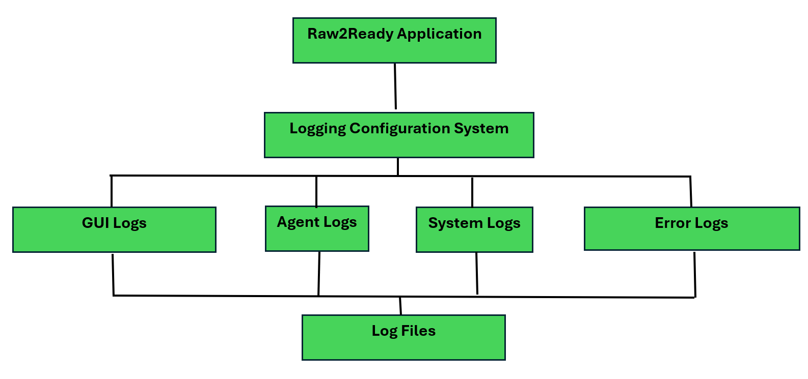
Future Extensions
The modular architecture allows additional agents to be incorporated without modifying the existing framework.
- Genome Analysis Agent
- Metabolic Pathway Agent
- Process Optimization Agent
- Digital Twin Agent
- Predictive Analytics Agent
- Laboratory Notebook Agent
- Regulatory Compliance Agent
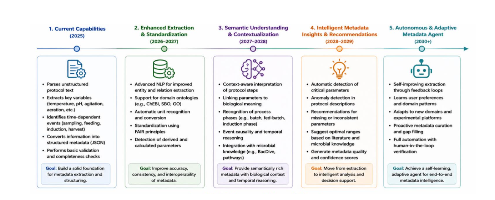
Best Practices
- Load datasets before asking analytical questions.
- Complete metadata to improve contextual reasoning.
- Validate datasets before analysis.
- Review statistical outputs before requesting AI interpretation.
- Verify literature-supported conclusions.
- Use complete experimental context whenever possible.
- Combine AI outputs with expert biological knowledge.
Troubleshooting
| Problem | Possible Cause | Recommended Solution |
|---|---|---|
| No response generated | No active dataset | Load a dataset before querying the AI. |
| Incomplete biological explanation | Metadata missing | Complete the Metadata Module. |
| Missing microorganism information | No BacDive match | Verify organism name and strain. |
| Literature unavailable | No internet connection | Check external connectivity. |
| Unexpected answer | Insufficient evidence | Provide additional experimental context. |
Summary
The Raw2Ready Multi-Agent AI Framework combines specialized Large Language Model agents, structured metadata, experimental datasets, microbial repositories and scientific literature into a unified reasoning system for industrial biotechnology.
By distributing complex reasoning across specialized agents coordinated by the Agent Orchestrator, Raw2Ready delivers transparent, modular and evidence-based AI support for fermentation research.
The Multi-Agent AI Framework transforms Raw2Ready from a data processing platform into an intelligent decision-support system for modern bioprocess analysis.
Documentation Complete
You have reached the end of the Raw2Ready documentation.
Continue exploring the project through the source code, GitLab repository and future documentation updates.